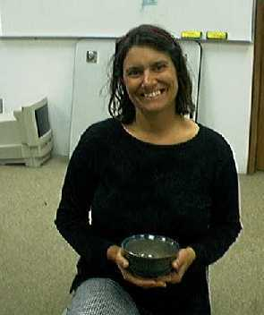

Mrs. HodaraMrs. Hodara
Hello. My name is Roberta Hodara. I am the teacher and coordinator of the 1998 SuperComputer Challenge team. It's been a real privilege and challenge working with these talented students. I teach Computer Science at Seabury Hall School in Makawao, Maui, Hawaii. In addition to teaching and running the school computer lab, I have other interests, hobbies and responsibilities. I have 3 children and my husband, Mr. Alan Hodara is an English teacher at Seabury. I have two hobbies: painting and ceramics.